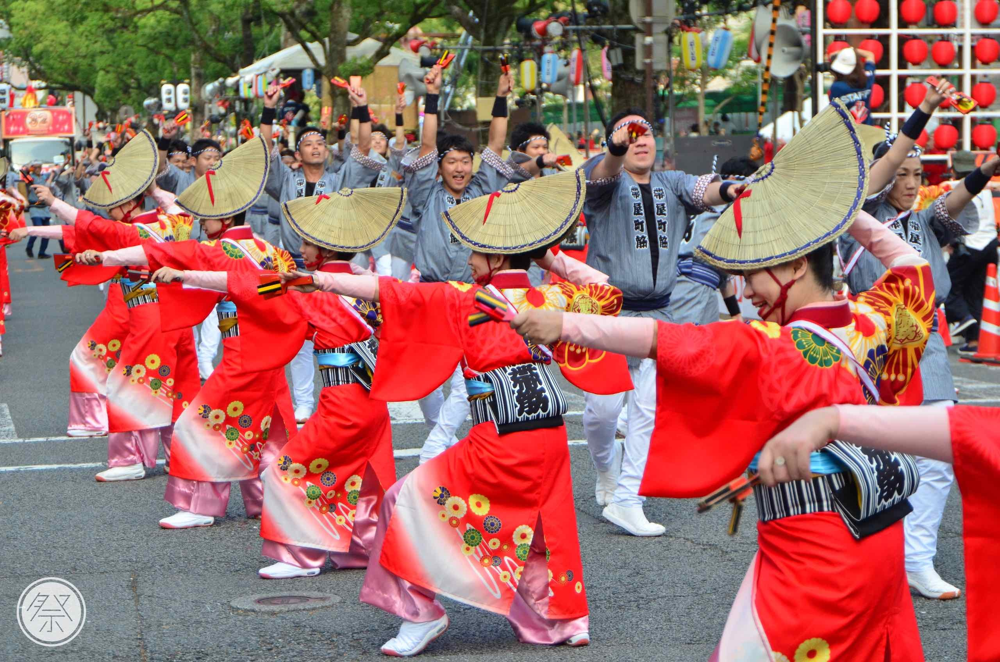
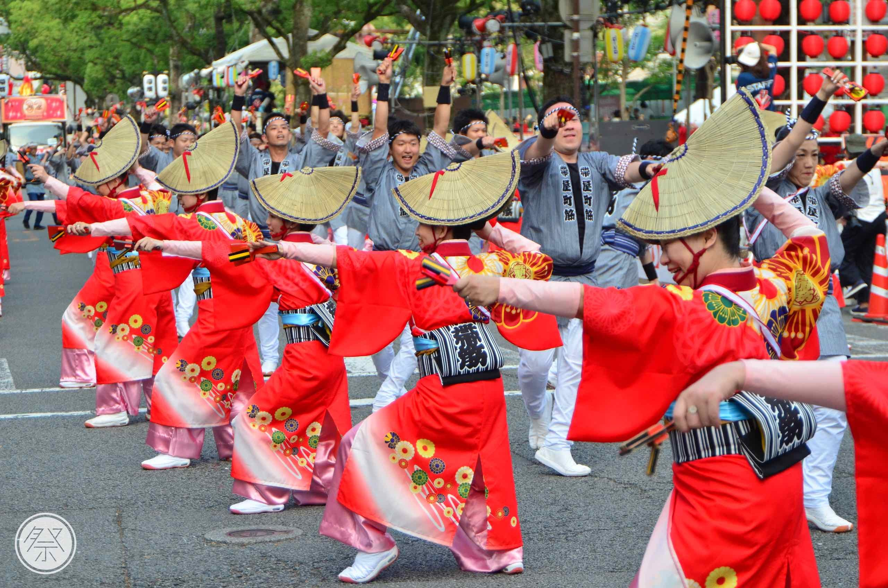

鳴子の音と熱気が街を彩る千葉最大のよさこい祭りへようこそ
よさこいは、音楽・踊り・衣装がすべて自由。
チームごとに個性があふれ、“本気の表現”が観客の心を打ちます。
鳴子の音が響き、笑顔と感動が街中に広がります。
SCHEDULE
VENUE
TEAM LIST
VIEWING
「chibayosaKOI」は、 たくさんの人へ「楽しさ」と「感動」を 届けられる祭り運営を目指します。
最新情報や写真をSNSで発信中！ぜひフォローしてください。
イベントの企画や運営、広報など、祭りの中心となって活動する学生メンバーを募集中！
会場案内、受付、設営など、お祭りを支える様々なサポートを一緒にお願いします。
 
